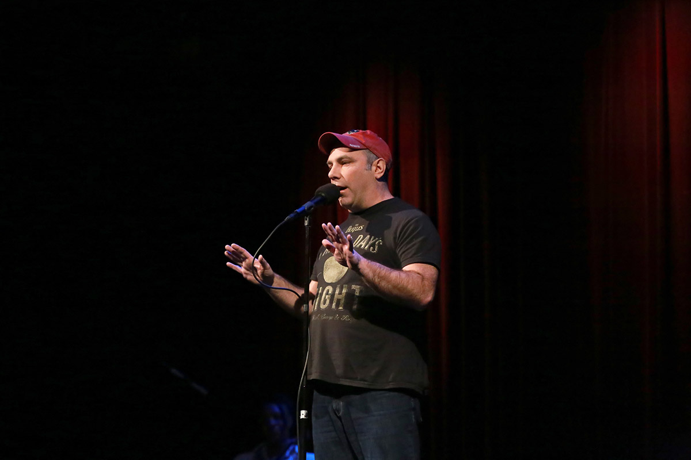
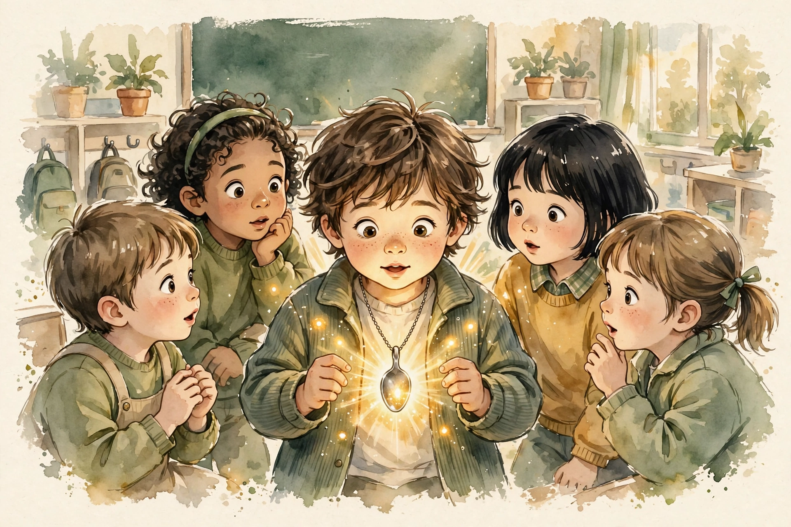
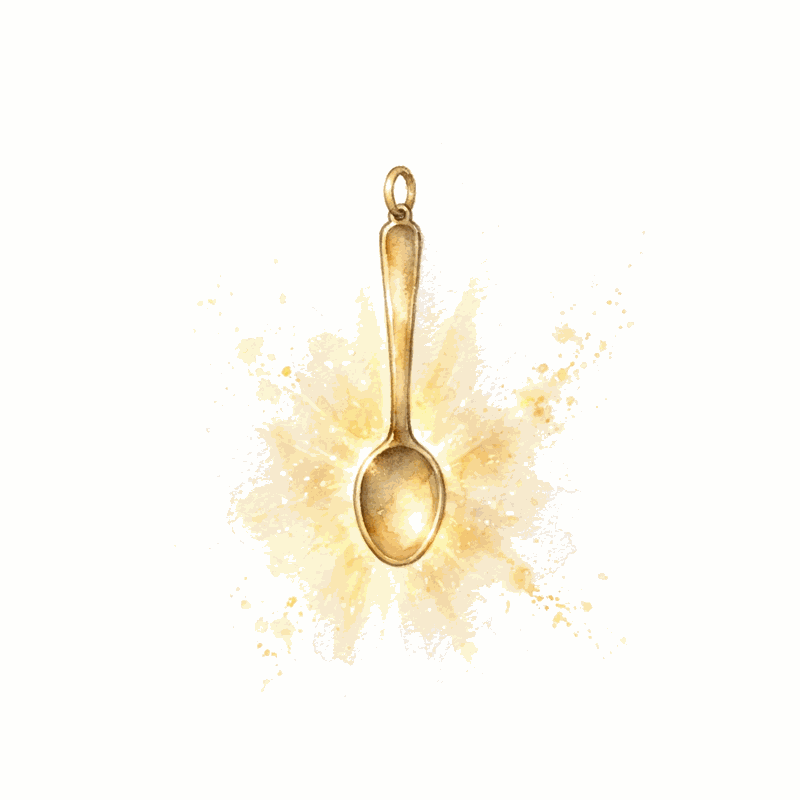
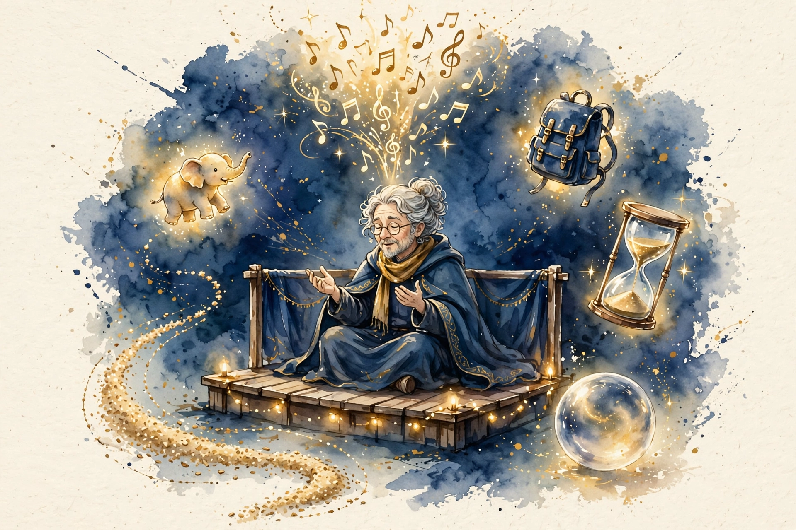
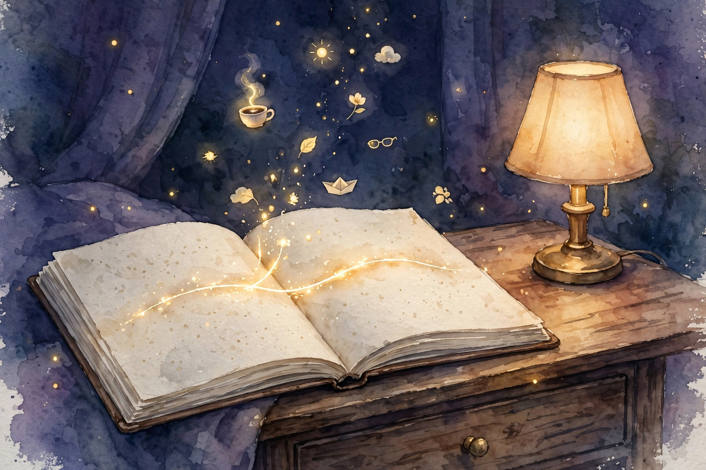

Source fact A claim from the episode transcript or the show's published chapter list. Interpretation My read on what it means. Chapter times come from the episode's own chapter list.
A Story Is Change Over Time

Source fact Most people think a story is stuff that happened, told in order. That is a report. Nobody wants your report except your mother, and she is required to listen. A story is change over time. Usually a realization: I used to think one thing, now I think another. Sometimes a transformation: I was one kind of person, now I am another.
Stories Versus Anecdotes
Source fact An anecdote is cotton candy: delicious, forgotten. A story is the best meal of your life: you remember the restaurant, the company, the order. The mechanism differs too. An anecdote hopes you think that once happened to me. A story aims for I once felt that way. Feeling travels. Events do not.
Source fact The customs story is the negative example. Detained in Canada, saved by his own Wikipedia page: amusing, but nothing changed. He left seeing nothing differently. Cotton candy. The test is the feeling test: did something just happen in me. If not, it is not a story yet.
Source fact Nobody owes you their attention. No one wants to hear anything you have to say unless you give them a reason to listen. Every sentence must earn the next one. The power-outage test makes it concrete. Twice in his life the power died mid-movie. Once he never went back: he had not cared about the characters. Once he hunted for another theater with power: he had to know the ending. Your audience should be the second kind of moviegoer.
The Spoon of Power


Source fact Behind his school, a pile of leaves quivers. A boy's hand emerges holding a metal object. Jamie, a redheaded ten-year-old, holds a kitchen spoon. Dicks declares it the Spoon of Power. Jamie sprints. For 18 minutes of recess, the teacher chases the boy across the field, up the slide, through the woods, and loses.
Source fact In class the standoff continues: math, reading, writing, the spoon daring him from the desk corner. At writing time Jamie's head falls to his arm, lost in his story. Dicks creeps up the aisle, reaches, and the spoon is gone. The class conspires. The bell rings. Jamie pulls the spoon from the library box.
I filed it under S for spoon.
Jamie, as quoted by Matthew Dicks, 00:06:09
Source fact Next day the spoon hangs on a chain around Jamie's neck, his father drilled the hole, his mother gave the chain. Thursday is the math test, and McKenzie falls apart as she always does. Jamie takes off the spoon: maybe this will help. Best test of her life. Days later David's grandfather dies, and Jamie waits at the door: I think you need this today. All year the spoon finds every kid in trouble: forgotten homework, the principal's hallway, the bully on the bus.
Source fact Last day of school, Jamie tries to give the spoon back. Dicks refuses: you kept it, you did this amazing thing, it is yours. Jamie insists.
The magic of the spoon only works in my classroom.
Jamie, as quoted by Matthew Dicks, 00:06:09
Source fact He pulls up the little orange chair to reach eye level and puts it on. The pandemic year, 2020 to 2021, the hardest of 26 years teaching, becomes the year of the spoon: kids, colleagues, everyone wearing it to get through the day. Sixteen years later he still carries it in his bag. At a pandemic-era talk, the line after the show was not for books. Grown adults lined up to touch a spoon.
The Architecture: Scenes, Senses, and Six Devices

Source fact Dicks remembers stories as scenes, and scenes are locations. Playground chase. Classroom standoff. Next-day necklace. Thursday test. David's door. The montage of three troubles. Last day. Pandemic coda. Each scene has one job. The montage is engineered: three locations, three kinds of kid problems, chosen from a thousand real spoon-givings.
Source fact Description discipline: almost no adjectives. Nobody wants to know what things looked like unless it matters. What the audience wants: what you felt, what you said, what you did. Say classroom and the listener supplies their own, which beats yours because it is theirs. Every unnecessary adjective steals bandwidth the audience needs for the story.
Source fact Through every scene run the four: stakes, suspense, surprise, humor. The Mount Rushmore of attention. A boring stretch gets painted over with suspense or humor until the story resumes. Demos, data sections, and explanations all need the same paint.
The six attention devices
Hover each device for its move.
Source: The Knowledge Project, Matthew Dicks, 00:19:08. Devices as named on air.
Source fact Six devices that hold attention. The elephant: the big obvious stake, named early. The backpack: tell the audience your plan, load them with your hopes, then let the plan fail. Breadcrumbs: hints dropped without explanation. The hourglass: when the audience is desperate for the next sentence, slow down. The crystal ball: say a prediction out loud. Humor: the most underused business tool. A laugh in the first 30 to 60 seconds relaxes the room.
Beginnings and Endings
Source fact The two most common failures are beginnings and endings. Beginnings fail because storytellers teach before they engage. The bad version of the spoon story: I am a fifth-grade teacher in Connecticut, my school is called... Nobody ever sat down hoping to be taught things before hearing something good.
Source fact Start at the moment the story starts: a pile of leaves, a hand, a metal object. Say metal object, not spoon. Knife, gun, or mystery: every guess is a crystal ball, and every guess makes them want the answer. Teach everything else along the way. The beginning is the plane: land in a beautiful place all you want, but if nobody boarded, you failed.
Source fact Start at the end. Before building anything, answer: what changed. The five-second moment is the change compressed: the spoon was nothing, now it is everything. Every keynote, every deck, every story needs its last three slides first. Say one thing. Saying three things says nothing.
Source fact The beginning must be the opposite of the end. Spoon as nothing versus spoon as everything. That opposition is the arc. The customs story is flat because Matt was never worried: Canada, a red X, worst case a longer wait. No fear at the start means no change at the end. If you cannot find the opposite, you do not have a story.
Source fact Leave a frayed ending, not a knot. Thelma and Louise ends mid-flight over the cliff. Butch Cassidy freezes before the federales fire. Unanswered questions keep the audience wondering the next day, and wondering is memory.
Toy: the opposition test
Write your story's beginning and ending. The toy checks the opposition.
Common Mistakes and How to Fix Them
Source fact The game with the audience: they pretend you make it up, you pretend you make it up. The truth is the middle. Never memorize. Remember the beats. A word caller recites memorized words and cannot read the room. A beater knows what happens next but not the exact sentences, so they can pivot, pull an anecdote from the pocket, and riff on the phone-checker in row three.
Source fact Trimming is allowed. Take Martin out of the car if Martin did nothing. He steals bandwidth. Condense two days into one. Nobody needs your cereal. Shorten locations. What you may not trim is your own stupidity. Keep the foolish parts, even enlarge them. Audiences crave the vulnerability, and the stupid thing you did is usually where the story lives.
Source fact Tell your own stories. Other people's stories report on fictional characters. The teller on stage with their own failure is vulnerability. The teller with someone else's anecdote is a newscaster.
Strategic Listening
Source fact Become a strategic listener. When a movie makes you laugh, ask what combination of words did it. When a story lands, dissect the mechanism. Consumers let content wash through. Reproducers pull the threads.
Source fact The Wonder Woman autopsy is the demonstration. The hero can only defeat the villain after her boyfriend sacrifices himself. The film's structure says a woman cannot win her own battle. You can enjoy the movie or see the machinery. Strategic listeners see it, and seeing it teaches them to build better.
Honesty, and the But-Therefore Test
Source fact Can you lie in stories. No. The spoon works because audiences know it is true. The line at the pandemic talk formed to touch a real spoon. Fiction would have made it a prop.
Source fact The South Park rule, adopted in the episode: replace and then with but and therefore. An and-story is a list: this happened and then this happened. Remove any scene and nothing breaks. A but-therefore story is a chain: this happened, but that blocked it, therefore this. Remove any scene and the story collapses.
And-stories versus but-therefore stories
Hover each column for the test.
Source: The Knowledge Project, Matthew Dicks, 01:02:50. The South Park rule as adopted on air.
Source fact But is the most powerful word in storytelling. "I got in the Uber today, but..." makes you need the next clause. And... lets the power go out unmourned. The trailer rule applies the test to promotion. State the stakes, withhold the solution. John McClane wants his wife, terrorists stand between them, he has only his wits: you must watch to learn how.
Toy: the but-therefore tester
Paste a short story below. The toy counts your connectors.
Homework for Life

Source fact The daily practice: each night, write down the most storyworthy moment of the day in a spreadsheet. One line. Most days it is small. Small moments beat big ones: the tiny, seemingly insignificant moment filled with meaning travels better than the near-death tale nobody can relate to.
Source fact The swim test story is the worked example. His son faces the camp swim test. Dicks tells him about 1983: nine pancakes, the cold lake, quitting at 50 yards, two days as a beginner swimmer, 45 extra minutes in the rowboat while friends canoed. The advice: do not quit because you are tired, quit only when you cannot swim. A week later the son passes and says he heard his father's voice on the second lap and swam two more.
Source fact The structure lesson is the BABC model. Chronological A-B-C would start in 1983 and take 40 years. Instead: B, the son packing now. A, the father's 1983 failure yanked into the present. C, the son's test and the voice in his head. The 40-year story becomes a week-long story. Start in the middle, pull the past in, land in the present.
Source fact The metaphor lesson for business: find the theme, not the content match. The entrepreneur teaching bottlenecks had the Facebook story: seven friends in ten days, the one metric that mattered. Dicks asked for his personal version. The answer: his marriage was in trouble until a friend said kiss your wife every morning, and it changed everything. One small solution fixing a huge problem. The personal story carries the business lesson further than any case study, because audiences remember the kiss and forget the dashboard. Every future morning kiss in the audience becomes a reminder of his talk.
Confidence Is a High Dive
Source fact The armed robbery at 21 is the origin story. Managing a McDonald's, three men through the glass, two already dead by their hands. He dropped the $7,000 deposit down the safe chute. They beat him. What he felt was not fear but regret: 20 years old, homeless six weeks earlier, nothing accomplished. After that, other people's opinions washed away. The stakes recalibrated permanently.
Source fact For everyone else, confidence is the high dive. The 14-foot board at the town pool terrified him every time until repetition burned the fear down. You cannot think your way off the board. You jump, survive, and jump again. Audiences reward the jump: he has never had anyone think less of him for something vulnerable he said on stage.
Source fact A speech does not live on the page. It lives in the air, in your voice. Memorized speeches speak at: identical tomorrow, aimed at the middle distance. Remembered stories speak to: different every time, aimed at these people.
Source fact The Brooklyn Historical Society proof: he arrived with a raunchy story, saw an audience of blue-haired old ladies, and spent 15 minutes converting humor to heart. He won the slam. The memorized version could not pivot. Catherine Burns's line, quoted in the episode: it is in the imperfection that the beauty lies. The stumble proves you speak to them.
Source fact The teaching coda: with kids, never correct spelling first. Have them read aloud. The mouth is more beautiful than the page. Keep the ratio at six praises to one correction. Writing, like storytelling, is the child saying here is my humanity, what do you think of it. Answer kindly or they never offer it again.
Source fact Success, for Dicks, is stasis refused: in six months, doing something he cannot imagine today.
The episode in seven lines
- A story is change over time. Everything else is a report.
- Earn every sentence. Nobody owes you their attention.
- Run the Mount Rushmore four through every scene.
- Deploy the six devices: elephant, backpack, breadcrumbs, hourglass, crystal ball, humor.
- Open at the opposite of the end. Fray the ending.
- Replace and-then with but-therefore. Trim honestly.
- Homework for Life: one line a night. Small moments win.
Distilled from The Knowledge Project, Matthew Dicks: The Art of Storytelling, Sep 2024. Full episode: youtube.com/watch?v=bZDiwANRS84. Chapter times from the episode's own chapter list.